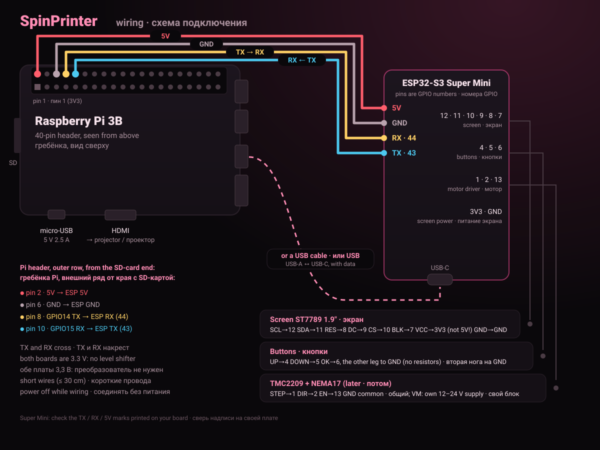
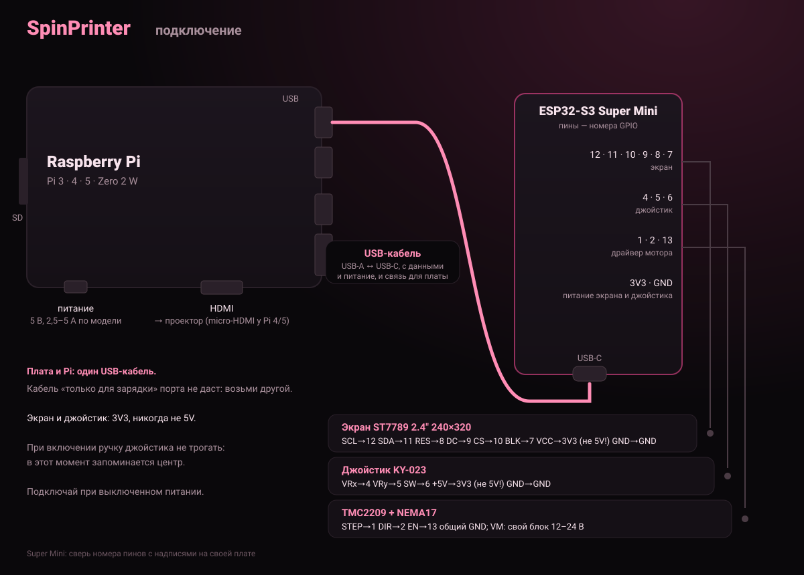

USB JTAG/serial debug unit (или COM… на Windows).USB JTAG/serial debug unit (or COM… on Windows).Этот браузер не умеет работать с USB-портом. Открой страницу в Chrome или Edge на компьютере.This browser cannot talk to USB serial ports. Open the page in Chrome or Edge on a computer.
Нужна защищённая страница (https).The page must be served over https.
Прошивка одна, под экран ST7789 2.4" и джойстик KY-023 на проводах (схема ниже). Больше ничего настраивать не нужно: после прошивки экран сразу работает. При включении ручку джойстика не трогай, в этот момент запоминается её центр. One firmware, for the 2.4" ST7789 screen and the KY-023 joystick on wires (diagram below). Nothing else to set up: the screen works right after flashing. Leave the stick alone at power-up, it takes its centre then.
Порт не появляется? Кабель «только для зарядки» — возьми другой. Не прошивается? Зажми BOOT, нажми и отпусти RESET, отпусти BOOT и попробуй снова. Настройки платы (скорость, язык, аксолотль) при прошивке сохраняются. No port in the list? The cable only charges: try another one. Flashing fails? Hold BOOT, press and release RESET, release BOOT and try again. The board's settings (speed, language, axolotl) are kept.
spinslicer, пользователь и пароль, твой Wi-Fi, включить SSH → записать.spinslicer, user and password, your Wi-Fi, enable SSH → write.ssh имя@spinslicer.localssh user@spinslicer.localcurl -fsSL https://raw.githubusercontent.com/v0xeII/SpinPrinter/main/SpinPi/get.sh | sudo bashЕсть Linux? Всё то же одной командой с компьютера: sudo bash SpinPi/make_sd_card.shOn Linux the same is one command on the computer: sudo bash SpinPi/make_sd_card.sh
Плата и Pi: USB-кабель с данными. Экран и джойстик: питание 3V3, не 5V.
Board and Pi: a USB cable that carries data. Screen and joystick: power from 3V3, not 5V.

